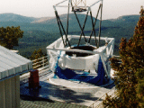
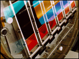

The Sloan Digital Sky Survey
Project Book
Index
1. Survey Strategy
2. The Telescope
3. The Site
4. The Photometric Camera
5. Photometric Calibration
6. Astrometry
7. Spectroscopy
8. Adaptive Tiling
9. Simulations
10. Datasystems
11. The Science Archive
 
© Copyright 1997, 1999, The Astrophysical Research Consortium